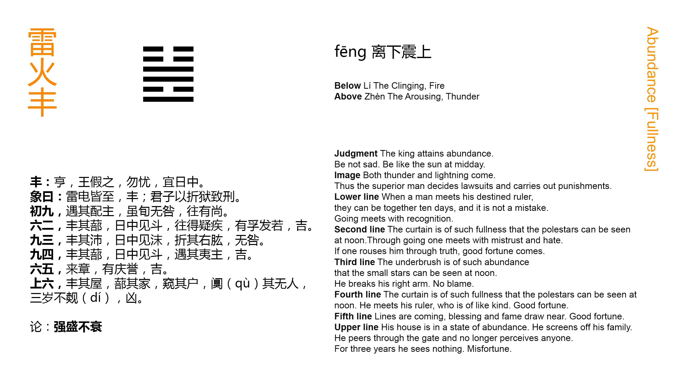

Chinese: 丰 ䷶ fēng

Fēng ䷶ intimates progress and development. When a king has reached the point (which the name denotes) there is no occasion to be anxious (through fear of a change). Let him be as the sun at noon.
1. The first NINE, undivided, shows its subject meeting with his mate. Though they are both of the same character, there will be no error. Advance will call forth approval.
䷶ changing to ䷽
Matching Line 1 in Adjacent Hexagram: ䷷
2. The second SIX, divided, shows its subject surrounded by screens so large and thick that at midday he can see from them the constellation of the Bushel. If he go (and try to enlighten his ruler who is thus emblemed), he will make himself to be viewed with suspicion and dislike. Let him cherish his feeling of sincere devotion that he may thereby move (his ruler's mind), and there will be good fortune.
䷶ changing to ䷡
Matching Line 2 in Adjacent Hexagram: ䷷
3. The third NINE, undivided, shows its subject with an (additional) screen of a large and thick banner, through which at midday he can see (the small) Mei star. (In the darkness) he breaks his right arm; but there will be no error.
䷶ changing to ䷲
Matching Line 3 in Adjacent Hexagram: ䷷
4. The fourth NINE, undivided, shows its subject in a tent so large and thick that at midday he can see from it the constellation of the Bushel. But he meets with the subject of the (first) line, undivided like himself. There will be good fortune.
䷶ changing to ䷣
Matching Line 4 in Adjacent Hexagram: ䷷
5. The fifth SIX, divided, shows its subject bringing around him the men of brilliant ability. There will be occasion for congratulation and praise. There will be good fortune.
䷶ changing to ䷰
Matching Line 5 in Adjacent Hexagram: ䷷
6. The topmost SIX, divided, shows its subject with his house made large, but only serving as a screen to his household. When he looks at his door, it is still, and there is nobody about it. For three years no one is to be seen. There will be evil.
䷶ changing to ䷝
Matching Line 6 in Adjacent Hexagram: ䷷
The character Fēng ䷶ is the symbol of being large and abundant, and, as the name of this hexagram, denotes a condition of abundant prosperity. In the changes of human affairs a condition of prosperity has often given place to one of an opposite character. The lesson of the hexagram is to show to rulers how they may preserve the prosperity of their state and people. The component trigrams have the attributes of intelligence and of motive force, and the second is under the direction of the first. A ruler with these attributes is not likely to fail in maintaining his crown and prosperity, and it may well be said that the figure intimates progress and development. The king is told not to be anxious, but to study how he may always be like the sun in his meridian height, cheering and enlightening all.
The explanation of the Tuàn is thus natural and easy. It will be found that a change is introduced in explaining the symbolism of the lines, which it is as well to point out here. Thus far we have found that to constitute a proper correlation between two lines, one of them must be whole, and the other divided. Here two undivided lines make a correlation. The law, evidently made for the occasion, goes far to upset altogether the doctrine of correlated lines. I have been surprised that the rules about the lines stated in the Introduction, pp. 15, 16, have held good so often. There have been various deviations from them, but none so gross as that in this hexagram.
Line 1 is strong, and in an odd place. Its correlate is 4, which would in other figures be deemed unfortunate. But here even the Text calls 4 (for the reference must be to it) the mate of 1, and makes their belonging to different categories of no account. The lesson taught is that mutual helpfulness is the great instrument for the maintenance of prosperity. The subject of line 1 is encouraged to go forward.
Line 2 is divided, and in its proper place. Occupying the centre of the trigram of brightness, the intelligence of it should be concentrated in its subject; but his correlate is the weak 5, weak and in an improper place, so that he becomes the benighted ruler, and darkness is shed from him down on 2, which is strangely symbolised. p. 187 The subject of 2 therefore, if he advance, will not be acceptable to his ruler, and will not be employed. The only way in which he. can be useful by developing the light that is in him is pointed out in the conclusion. The constellation of the Bushel corresponds to our Ursa Major, or perhaps part of Sagittarius.
Line 3 is strong, in its proper place. It is the last line moreover of the trigram of Brightness. All these conditions are favourable to the employment of its subject; but its correlate is the weak 6, which is at the extremity of the trigram of movement. There is no more power therefore in 6, and the subject of 3 has no one to co-operate with him. His symbolism and auspice are worse than those of 2; but his own proper goodness and capacity will save him from error. Mèi is a small star in or near the Bushel.
The symbolism of line 4 is the same as that of 2, till we come to the last sentence. Then there is the strange correlation of the two strong lines in 4 and 1; and the issue is good.
The subject of line 5 is in the ruler's place, himself weak, but 'the lord' of the trigram of movement. He can do little unhelped, but if he can bring into the work and employ in his service the talents of 1, 3, and 4, and even of 2, his correlate, the results will be admirable. Nothing consolidates the prosperity of a country so much as the co-operation of the ruler and able ministers.
All the conditions of line 6 are unfavourable, and its subject is left to himself without any helpers. He is isolated for long, and undone. The issue is only evil.